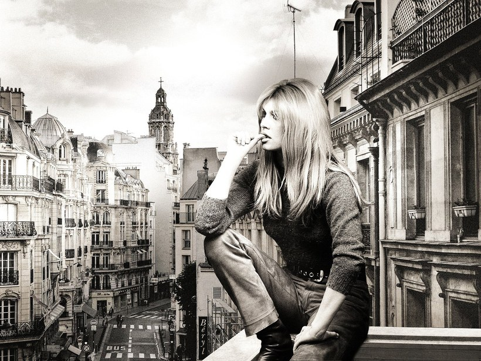
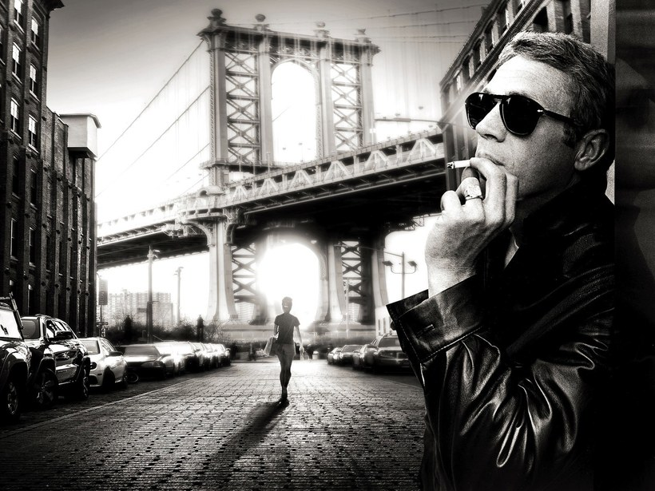
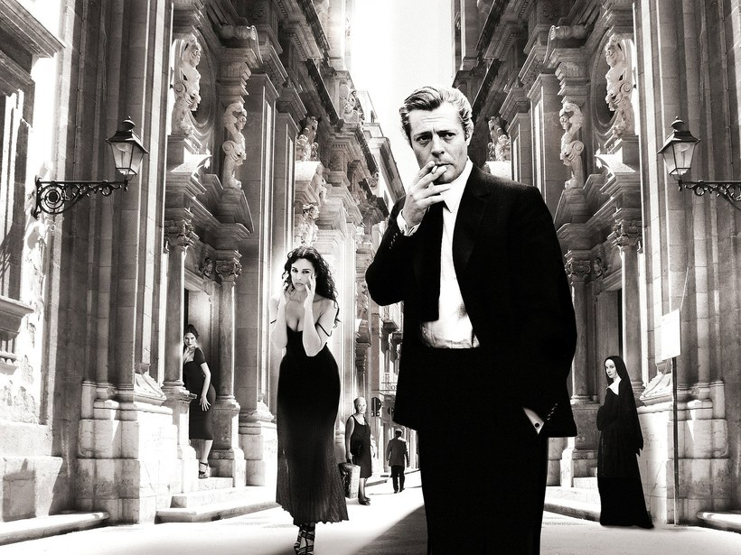
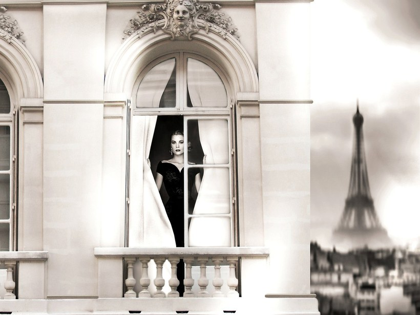

Axel Crieger
Beyond the scenes
Das Archiv dessen, was nie geschah
Deleted Scenes, nur anders: Axel Criegers Kunst bewegt sich zwischen dem, was war, und dem, was hätte sein können. Sein Material liegt zwischen Fundstück und Erfindung, zwischen Fotografie, Zeichnung und digitaler Bearbeitung, so präzise komponiert, dass Hollywood in seinem Werk eine zweite Wirklichkeit erhält.
Die Ikone
Vertraute Gesichter, unmögliche Orte
Audrey Hepburn frühstückt nicht bei Tiffany's, sondern bei Katz's Delicatessen. Marilyn Monroe, Steve McQueen und Brigitte Bardot erscheinen zwischen New Yorker Häuserschluchten, Yachten und Privatjets, in Szenen, die es nie gegeben hat. Sie sind so überzeugend, dass seine Fiktionen wie verschollene Aufnahmen einer glamouröseren Vergangenheit wirken.

Eine Frau auf einer Pariser Straße, vollkommen entspannt in einer Stadt, die sie so nie gesehen hat.

Ein Mann unter der Manhattan Bridge, Kragen hoch, Zigarette an. Ein Gesicht, das alle kennen, an einem Ort, an dem es nie stand.
Die Maschine
Geschwindigkeit, die vollkommen still steht
Yacht, Wagen, Flugzeug. Das Fahrzeug ist der Star, und der Mensch sitzt vollkommen ruhig mittendrin. Der deutsche Künstler verbindet Fotografie, Collage und digitale Nachbearbeitung so nahtlos, dass aus Wirklichkeit Fantasie wird und aus Ikonen Legenden. Entertainment Weekly nannte seine Bildsprache treffend die „Grammar of Glamour“.
Die Bühne
Die zweite Wirklichkeit
Crieger bewegte sich früh in jenem kulturellen Kosmos, den seine Werke heute zitieren: Er begegnete Andy Warhol, wurde in dessen Magazin Interview veröffentlicht und erhielt Anerkennung von Joseph Beuys. Er setzt dort an, wo Mythos und Realität längst verschwimmen, wo das kollektive Bild das bloß Biografische überlagert. Genau in diesem Zwischenraum wird seine Fiktion zur zweiten Wirklichkeit.

Zwei Figuren unter einer Kolonnade, eine mitten im Zug an der Zigarette. Die Architektur verhält sich weniger wie ein Gebäude als wie eine Filmkulisse.

Eine Haussmann-Fassade, ein einziges geöffnetes Fenster, und der Eiffelturm näher, als er von irgendeinem Fenster dieser Stadt je war.